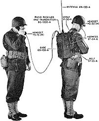
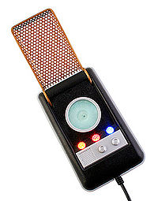

Walkie-talkie
 De: La Frikipedia, la enciclopedia extremadamente seria.
De: La Frikipedia, la enciclopedia extremadamente seria.
Del ingles "Walkie" (walk, walker, Jhony Walker) que significa empapado en Whisky y de "Talkie" (talk) hablar.Literalmente hablar como borracho, sin sentido, sin forma de que te entiendan; farfullar, farullar, blisbisear.
 Mecanismo original muy poco usado en la actualidad, no se porque...
El Walkie-Talkie es un objeto que es como un teléfono pero con un zumbido constante de fondo. Sin embargo para usarlo se necesita una gran concentración y coordinación mano-cerebro-boca, ya que para hablar (y que te oigan) es necesario pulsar un botón a la vez que se articulan las chorribobadas, y acordarse de soltarlo para poder oír las contestaciones. Esto elimina a una gran parte de la población como potenciales usuarios, ya que las conversaciones llegarían a ser de este tipo:
- ...selmo trae me el tupeware de la co...
- ...toy cagan.. ...jelo tu puta vaga de mi...
- ...al peo sogi...
- ...madre vacabu...
- ...bro..
Para intentar solucionar este crucial problema se suele usa "cambio" al final de cada parrafada, para que así el otro inútil sepa cuando hablar. Desgraciadamente esto no hace sino empeorar las cosas:
- ...selmo trae me el tupeware de la co... ...bio
- ... cambio
- ...ño cambio que me traigasas el tupeware cambio
- ...agando coño cambio
- ...ones vas a cambiar de coño te mato desg... ...adre cambio
- ...ta ido la pinza? Questoy ca... ...ones que coño cambio de coño cambio
- ...te mato desgr... corto
Notese que para finalizar una conversación se recurre a la expresión "corto". Lamentablemente esto ha roto innumerables matrimonios y noviazgos, por lo que muchos se refieren al aparatejo como el divorciador o el corta royos.
Tipos de Walkie-talkie
Existen varios tipos de walkie-talkie:
- Walkie-talkie de verdad: Lo usan policías y/o adolescentes frikis.
- Walkie-talkie de mentira: Son de juguete y los niños los compran con mucha ilusión, los tiran cuando se dan cuenta de que si oyen la voz del otro no es por el Walkie-talkie, sino por los chillidos que el otro profiere.
- Walkie-talkie para bebes: Aparatejo que sirve para saber si tu hijo pequeño llora pero que se acaba metiendo el lloro del niño del vecino. Generalmente acaba volando por la ventana (el aparatejo no el niño del vecino)
 Walkie talkie estilo Star Trek para Frikis
Usos
- En el Ikea:Usado por las mujeres para tener localizados a los hombres aunque sepan perfectamente que estos están en el bar
- En el monte:Para no perderse... lo que lleva a situaciones del tipo: donde estás cambio... aquí joder cambio... aquí¿dónde? cambio... no se, hay un árbol grande, creo que es un pino cambio... ¿no sera el quinto? cambio... ein??!!! cambio... déjalo corto corto.
- En el trabajo:Se usa para perder el tiempo, pedir que te suban una llave inglesa al tejado, o preguntar de que han llevado el bocadillo los demás.
- En el coche:Directamente para pegarte un guarrazo mientras pulsas el botón y le dices a tu cuñao que va detrás que tenga cuidado que hay obras en la carretera.
Autor(es):
- Doctor grijander
- Aque
- Viento
- Narsone
- Cibercrank
- ArreKarallo
- Naitsabes
- Thelordg95
- Jidef
Frikipedia 2005-2016, Licencia
GFDL 1.2 - Extraído por FrikiLeaks